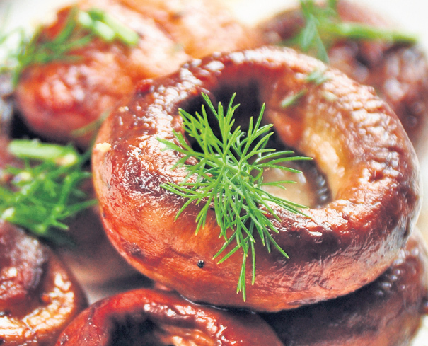

Ingrediente
Ciuperci-15 bucati mari
Patrunjel-Cateva fire
Marar-Cateva fire
Un catel de usturoi
Sare-1/4 lingurita
Boia-1/2 lingurita
Piper-1/2 lingurita
Putin ulei
Mod de preparare:
Se spală ciupercile şi apoi se usucă cu şerveţele de hârtie. Se scot codiţele. Se aşază 10 ciuperci în tavă, cu faţa în jos, şi se dau la cuptor pentru 10 minute. Se scurge sucul lăsat de ciuperci din tavă şi se întorc cu faţa în sus. Se toacă mărunt codiţele plus restul de 3 ciuperci şi se pun verdeţurile tocate, usturoiul strivit şi condimentele. Se umplu pălărioarele ciupercilor din tavă cu amestecul de mai sus. Ciupercile se stropesc cu puţin ulei. Se dau la cuptor pentru 15-20 de minute. Se servesc calde, cu mujdei.